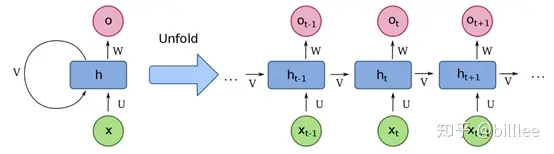
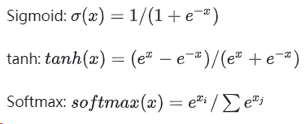
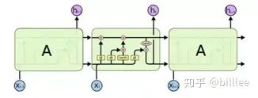
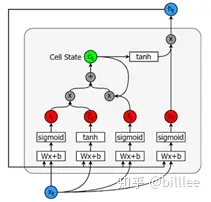
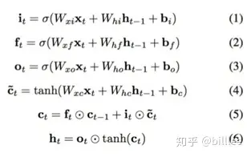

【学习笔记】从零开始实现循环神经网络（无框架）
循环神经网络

x为序列输入
U 为连接每一时刻输入层与隐藏层的权重矩阵
- V为连接上一时刻与下一时刻隐藏层的权重矩阵
- U为连接每一时刻隐藏层与输出层的权重矩阵
- h为隐藏状态单元
- o为输出状态单元
对于每一时刻
- $ht=f(Ux_t+Vh{t-1})$，其中f为激活函数，如tanh
- $o_t=softmax(Wh_t)$
函数初始化
hidden_size = 50 # 隐藏层神经元个数 vocab_size = 4 # 词汇表大小 def init_orthogonal(param): """ 正交初始化. """ if param.ndim < 2: raise ValueError("参数维度必须大于2.") rows, cols = param.shape # 生成指定大小的服从标准正态分布（均值为0，方差为1）的随机数矩阵 new_param = np.random.randn(rows, cols) if rows < cols: new_param = new_param.T # QR 矩阵分解， q为正交矩阵，r为上三角矩阵 q, r = np.linalg.qr(new_param) # 让q均匀分布，https://arxiv.org/pdf/math-ph/0609050.pdf # 从上三角矩阵R中提取对角线元素，并将其存储在一个一维数组d中。参数0表示我们希望提取的对角线位于R的主对角线上。 d = np.diag(r, 0) # 这行代码对d中的每个元素取符号，即将正数映射为+1，负数映射为-1，零保持不变。 # 这样做是为了获得一个与d相同大小的数组ph，其中元素的值只能为+1、-1或0。 ph = np.sign(d) # 将正交矩阵Q的每一列都乘以对应的ph数组元素，从而调整了Q的方向。 # 乘以-1的列意味着对应的特征向量在QR分解中被反转了。通过这样的调整，确保了Q矩阵的对角线元素为正数。 q *= ph if rows < cols: q = q.T new_param = q return new_param def init_rnn(hidden_size, vocab_size): """ 初始化循环神经网络参数. Args: hidden_size: 隐藏层神经元个数 vocab_size: 词汇表大小 """ # 输入到隐藏层权重矩阵 U = np.zeros((hidden_size, vocab_size)) # 隐藏层到隐藏层权重矩阵 V = np.zeros((hidden_size, hidden_size)) # 隐藏层到输出层权重矩阵 W = np.zeros((vocab_size, hidden_size)) # 隐层bias b_hidden = np.zeros((hidden_size, 1)) # 输出层bias b_out = np.zeros((vocab_size, 1)) # 权重初始化 U = init_orthogonal(U) V = init_orthogonal(V) W = init_orthogonal(W) return U, V, W, b_hidden, b_out激活函数

def sigmoid(x, derivative=False): """ Args: x: 输入数据x derivative: 如果为True则计算梯度 """ x_safe = x + 1e-12 f = 1 / (1 + np.exp(-x_safe)) if derivative: return f * (1 - f) else: return f def tanh(x, derivative=False): x_safe = x + 1e-12 f = (np.exp(x_safe)-np.exp(-x_safe))/(np.exp(x_safe)+np.exp(-x_safe)) if derivative: return 1-f**2 else: return f def softmax(x, derivative=False): x_safe = x + 1e-12 f = np.exp(x_safe) / np.sum(np.exp(x_safe)) if derivative: pass # 本文不计算softmax函数导数 else: return fRNN前向传播
def forward_pass(inputs, hidden_state, params): """ RNN前向传播计算 Args: inputs: 输入序列 hidden_state: 初始化后的隐藏状态参数 params: RNN参数 """ U, V, W, b_hidden, b_out = params outputs, hidden_states = [], [] for t in range(len(inputs)): # 计算隐藏状态 hidden_state = tanh(np.dot(U, inputs[t]) + np.dot(V, hidden_state) + b_hidden) # 计算输出 out = softmax(np.dot(W, hidden_state) + b_out) # 保存中间结果 outputs.append(out) hidden_states.append(hidden_state.copy()) return outputs, hidden_statesRNN后向传播
def clip_gradient_norm(grads, max_norm=0.25): """ 梯度剪裁防止梯度爆炸 """ max_norm = float(max_norm) total_norm = 0 # 对梯度列表进行遍历 for grad in grads: # 计算当前梯度的平方范数 grad_norm = np.sum(np.power(grad, 2)) total_norm += grad_norm # 所有梯度的总范数 total_norm = np.sqrt(total_norm) # 计算剪裁系数 clip_coef = max_norm / (total_norm + 1e-6) # 剪裁梯度 if clip_coef < 1: for grad in grads: grad *= clip_coef return grads def backward_pass(inputs, outputs, hidden_states, targets, params): """ 后向传播 Args: inputs: 序列输入 outputs: 输出 hidden_states: 隐藏状态 targets: 预测目标 params: RNN参数 """ U, V, W, b_hidden, b_out = params d_U, d_V, d_W = np.zeros_like(U), np.zeros_like(V), np.zeros_like(W) d_b_hidden, d_b_out = np.zeros_like(b_hidden), np.zeros_like(b_out) # 跟踪隐藏层偏导及损失 d_h_next = np.zeros_like(hidden_states[0]) loss = 0 # 对于输出序列当中每一个元素，反向遍历 s.t. t = N, N-1, ... 1, 0 for t in reversed(range(len(outputs))): # 交叉熵损失 loss += -np.mean(np.log(outputs[t]+1e-12) * targets[t]) # d_loss/d_o d_o = outputs[t].copy() d_o[np.argmax(targets[t])] -= 1 # d_o/d_w d_W += np.dot(d_o, hidden_states[t].T) d_b_out += d_o # d_o/d_h d_h = np.dot(W.T, d_o) + d_h_next # Backpropagate through non-linearity d_f = tanh(hidden_states[t], derivative=True) * d_h d_b_hidden += d_f # d_f/d_u d_U += np.dot(d_f, inputs[t].T) # d_f/d_v d_V += np.dot(d_f, hidden_states[t-1].T) d_h_next = np.dot(V.T, d_f) grads = d_U, d_V, d_W, d_b_hidden, d_b_out # 梯度裁剪 grads = clip_gradient_norm(grads) return loss, grads梯度优化
# 随机梯度下降法 def update_parameters(params, grads, lr=1e-3): # lr， learning rate， 学习率 for param, grad in zip(params, grads): param -= lr * grad return params
LSTM


包含5个基本组件，它们是：
- 单元状态（cell_state）-储存短期记忆和长期记忆的储存单元
- 隐藏状态(hidden_state) -根据当前输入、先前的隐藏状态和当前单元状态信息计算得到的输出状态信息
- 输入门（input_gate）-控制从当前输入流到单元状态的信息量
- 遗忘门（forget_gate）-控制当前输入和先前单元状态中有多少信息流入当前单元状态
- 输出门（output_gate）-控制有多少信息从当前单元状态进入隐藏状态

三个门控单元及一个细胞状态单元的输入都是一样的，都是当前时刻的输入$xt$以及上一个隐藏状态$h{t-1}$, 但是他们的参数是不同的，同时细胞状态单元使用的是$tanh$激活函数。
遗忘门$ft$，上一细胞状态$c{t-1}$, 记忆门$i_t$ 及当前细胞状态一起决定输出细胞状态 $c_t$。
输出门 $o_t$及 $c_t$共同决定隐藏状态输出 $h_t$。
参数初始化
# 输入单元 + 隐藏单元 拼接后的大小 z_size = hidden_size + vocab_size def init_lstm(hidden_size, vocab_size, z_size): """ LSTM网络初始化 Args: hidden_size: 隐藏单元大小 vocab_size: 词汇表大小 z_size: 隐藏单元 + 输入单元大小 """ # 遗忘门参数矩阵及偏置 W_f = np.random.randn(hidden_size, z_size) b_f = np.zeros((hidden_size, 1)) # 记忆门参数矩阵及偏置 W_i = np.random.randn(hidden_size, z_size) b_i = np.zeros((hidden_size, 1)) # 细胞状态参数矩阵及偏置 W_g = np.random.randn(hidden_size, z_size) b_g = np.zeros((hidden_size, 1)) # 输出门参数矩阵及偏置 W_o = np.random.randn(hidden_size, z_size) b_o = np.zeros((hidden_size, 1)) # 连接隐藏单元及输出的参数矩阵及偏置 W_v = np.random.randn(vocab_size, hidden_size) b_v = np.zeros((vocab_size, 1)) # 正交参数初始化 W_f = init_orthogonal(W_f) W_i = init_orthogonal(W_i) W_g = init_orthogonal(W_g) W_o = init_orthogonal(W_o) W_v = init_orthogonal(W_v) return W_f, W_i, W_g, W_o, W_v, b_f, b_i, b_g, b_o, b_vLSTM前向计算
def forward(inputs, h_prev, C_prev, p): """ Arguments: inputs: [..., x, ...], x表示t时刻的数据, x的维度为(n_x, m). h_prev： t-1时刻的隐藏状态数据，维度为 (n_a, m) C_prev： t-1时刻的细胞状态数据，维度为 (n_a, m) p：列表，包含LSTM初始化当中所有参数: W_f： (n_a, n_a + n_x) b_f： (n_a, 1) W_i： (n_a, n_a + n_x) b_i： (n_a, 1) W_g： (n_a, n_a + n_x) b_g： (n_a, 1) W_o： (n_a, n_a + n_x) b_o： (n_a, 1) W_v： (n_v, n_a) b_v： (n_v, 1) Returns: z_s, f_s, i_s, g_s, C_s, o_s, h_s, v_s：每一次前向传播后的中间输出 outputs：t时刻的预估值， 维度为(n_v, m) """ assert h_prev.shape == (hidden_size, 1) assert C_prev.shape == (hidden_size, 1) W_f, W_i, W_g, W_o, W_v, b_f, b_i, b_g, b_o, b_v = p # 保存各个单元的计算输出值 x_s, z_s, f_s, i_s, = [], [] ,[], [] g_s, C_s, o_s, h_s = [], [] ,[], [] v_s, output_s = [], [] h_s.append(h_prev) C_s.append(C_prev) for x in inputs: # 拼接输入及隐藏状态单元数据 z = np.row_stack((h_prev, x)) z_s.append(z) # 遗忘门计算 f = sigmoid(np.dot(W_f, z) + b_f) f_s.append(f) # 输入门计算 i = sigmoid(np.dot(W_i, z) + b_i) i_s.append(i) # 细胞状态单元计算 g = tanh(np.dot(W_g, z) + b_g) g_s.append(g) # 下一时刻细胞状态计算 C_prev = f * C_prev + i * g C_s.append(C_prev) # 输出门计算 o = sigmoid(np.dot(W_o, z) + b_o) o_s.append(o) # 隐藏状态单元计算 h_prev = o * tanh(C_prev) h_s.append(h_prev) # 计算预估值 v = np.dot(W_v, h_prev) + b_v v_s.append(v) # softmax转换 output = softmax(v) output_s.append(output) return z_s, f_s, i_s, g_s, C_s, o_s, h_s, v_s, output_sLSTM后向传播
def backward(z, f, i, g, C, o, h, v, outputs, targets, p = params): """ Arguments: z，f，i，g，C，o，h，v，outputs：对应前向传播输出 targets： 目标值 p：W_f，b_f，W_i，b_i，W_g，b_g，W_o，b_o，W_v，b_v， LSTM参数 Returns: loss：交叉熵损失 grads：p中参数的梯度 """ W_f, W_i, W_g, W_o, W_v, b_f, b_i, b_g, b_o, b_v = p # 初始化梯度为0 W_f_d = np.zeros_like(W_f) b_f_d = np.zeros_like(b_f) W_i_d = np.zeros_like(W_i) b_i_d = np.zeros_like(b_i) W_g_d = np.zeros_like(W_g) b_g_d = np.zeros_like(b_g) W_o_d = np.zeros_like(W_o) b_o_d = np.zeros_like(b_o) W_v_d = np.zeros_like(W_v) b_v_d = np.zeros_like(b_v) dh_next = np.zeros_like(h[0]) dC_next = np.zeros_like(C[0]) # 记录loss loss = 0 for t in reversed(range(len(outputs))): loss += -np.mean(np.log(outputs[t]) * targets[t]) C_prev= C[t-1] #输出梯度 dv = np.copy(outputs[t]) dv[np.argmax(targets[t])] -= 1 #隐藏单元状态对输出的梯度 W_v_d += np.dot(dv, h[t].T) b_v_d += dv #隐藏单元梯度 dh = np.dot(W_v.T, dv) dh += dh_next do = dh * tanh(C[t]) do = sigmoid(o[t], derivative=True)*do #输入单元梯度 W_o_d += np.dot(do, z[t].T) b_o_d += do #下一时刻细胞状态梯度 dC = np.copy(dC_next) dC += dh * o[t] * tanh(tanh(C[t]), derivative=True) dg = dC * i[t] dg = tanh(g[t], derivative=True) * dg # 当前时刻细胞状态梯度 W_g_d += np.dot(dg, z[t].T) b_g_d += dg # 输入单元梯度 di = dC * g[t] di = sigmoid(i[t], True) * di W_i_d += np.dot(di, z[t].T) b_i_d += di # 遗忘单元梯度 df = dC * C_prev df = sigmoid(f[t]) * df W_f_d += np.dot(df, z[t].T) b_f_d += df # 上一时刻隐藏状态及细胞状态梯度 dz = (np.dot(W_f.T, df) + np.dot(W_i.T, di) + np.dot(W_g.T, dg) + np.dot(W_o.T, do)) dh_prev = dz[:hidden_size, :] dC_prev = f[t] * dC grads= W_f_d, W_i_d, W_g_d, W_o_d, W_v_d, b_f_d, b_i_d, b_g_d, b_o_d, b_v_d # 梯度裁剪 grads = clip_gradient_norm(grads) return loss, grads训练过程
RNN和LSTM网络的前后向传播都实现完毕，两者的训练过程一致，整个训练过程包括 输入数据->数据预处理->前向传播->后向传播->更新参数。
# 遍历训练集当中的序列数据 for inputs, targets in training_set: # 对数据进行预处理 inputs_one_hot = one_hot_encode_sequence(inputs, vocab_size) targets_one_hot = one_hot_encode_sequence(targets, vocab_size) # 针对每个训练样本，定义一个隐状态参数 hidden_state = np.zeros_like(hidden_state) # 前向传播 outputs, hidden_states = forward_pass(inputs_one_hot, hidden_state, params) # 后向传播 loss, grads = backward_pass(inputs_one_hot, outputs, hidden_states, targets_one_hot, params) # 梯度更新 params = update_parameters(params, grads, lr=3e-4)